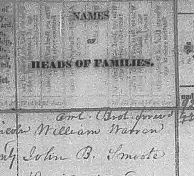

Stephen Alexander to John B. Smoot
A Deed ~ 1828
(Lincoln County Tennessee Deed Book “H” page 604.)
Transcription & Annotation by Frederick K. Smoot
Stephen Alexander
To
} Deed
John B. Smoot
This Indenture was made this
twenty first day of April one thousand eight hundred and twenty eight between Stephen Alexander of Lincoln
County and State of Tennessee of the one part and John B. Smoot of the County and State aforesaid of the
other part, Witnessith, that the said Stephen Alexander for and in consideration of the sum of two hundred
dollars lawful money in the hand paid by the said John B. Smoot, the receipt whereof is certified and
acknowledged, hath and by these presents doth hereby grant bargain sell alien and confirm unto the said
John B. Smoot and his heirs and assignees forever, one certain tract or parcel of land containing __ [blank]
acres situate lying and being in the County and State aforesaid whereon the said Smoot now lives on Mulberry
Creek near the sd. Alexanders Mill and bounded as follows, to wit, Beginning in the center of a branch east
of said Smoots tan yard, on the sectional line running south with said line 26½ poles to Henry Warren’s
corner in said line, thence west forty eight and a half poles to a stake near the goat yard, thence North
seventeen and a half degrees east, forty four poles to a stake near said Branch and from thence up said
Branch to the beginning, containing __ [blank] acres as aforesaid. To have and to hold the said tract of
land with all the improvement and appurtenances thereunto belonging or in any ___ [?] pertaining thereto
unto the said John B. Smoot and his heirs and assignees forever, And the said Stephen Alexander for himself
his heirs executors and administrators doth hereby covenant and agree to warrant the rights and title of the
before mentioned land and premises unto the said Smoot and his heirs forever __ __ [?] the said Alexander and
his heirs and from all and every other person or persons whatsoever. In testimony whereof the said Stephen
Alexander and __ [?] hath hereunto set his hand and affixed his seal on the day and year first written.
Stephen Alexander (seal)
Signed sealed and acknowledged in the presence of
Test
Reese Howell, George W. Street
State of Tennessee and Lincoln County Court April Term 1830
Brice M. Garner clerk of said Court do certify that the execution of the foregoing deed of conveyance
was acknowledged in open Court by the grantor & ordered to be certified for registration.
23 d April 1830.
Registered 25 th June 1830.
Notes:
1. On 2 April 1832 John B. Smoot deeds four and one half (4½) acres to “Hogue and Mason.” This
tract adjoins Hogue and Mason’s corner, the Wm F. Smith line, and Henry Warren’s northeast corner and
so states “whereon my Tan Yard now stands.” The witnesses were Wm F. Smith, Webb K. Jennings, and John
Garner [?]. Registered 28 May 1833.
(Lincoln County Tennessee Deed Book “I” page 519.)
2. Here are some comments about John B. Smoot’s wife Sarah Jennings, from my good friend, Mrs. Betty M.
Majors of Tullahoma, Tennessee, dated 10 Jun 1993.
“... Interestingly, the witness on the shorter [1832] deed is Webb K. Jennings, who was John B.
Smoot’s wife’s brother. John B. Smoot and Sarah Jennings were married 10 Jan 1824 in Lincoln
County Tennessee . Sarah married secondly to______ Williamson, and is buried next to this second husband
in Harpersville Churchyard in Harpersville, Shelby County, Alabama. She was the daughter of William Jennings
who died in 1840 in Shelby County, Alabama and his wife Polly Kidd. Wm Jennings was the son of Robert and
Rachel (Patterson)
Jennings. Polly Kidd was the daughter of Webb and Elizabeth (White) Kidd. Elizabeth White was the daughter
of Jeremiah and Mary (Martin) White and granddaughter of Peter and Mary (Keeble) White and John and Martha
(Brumwell) Martin...”
3. John B. Smoot is listed in The Village Messenger, Fayetteville, Tennessee, Vol. II,
No. 5, April 7, 1824;
“Remaining in the Post Office in Fayetteville, T. on the
31st of March, 1824, which if not taken out before
the 1st of July next will be sent to the General P. Office as dead letters.
J. P. M’CONNELL, P. M.
March 31, 1824
4. A John B. Smoote is enumerated in the 1830 U. S. Federal Census for Lincoln County Tennessee.
001001 - 000001
One male, 10-15, one male, 30-40, one female, 30-40.

5. Northeastern Lincoln County including that area of Lincoln County which became Moore
County in 1871 was known for its excellent hunting. A tannery then would have been a fitting business
for that area. The East and West Forks of Mulberry Creek are found in both Moore and Lincoln Counties.
Mulberry Creek itself is found in Lincoln County. There is today a Tanyard Hill Road which runs southeast from
Lynchburg, the Moore County seat.
Comment:
In the realm conjecture, I offer that the John B. Smoot on the above deed
may be the same John B. Smoot as found as a witness on
this 1814 deed Pittsylvania
County Virginia. That tract of land included a tannery.
Frederick K. Smoot
|
|